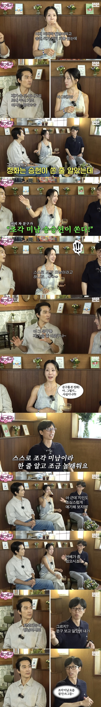
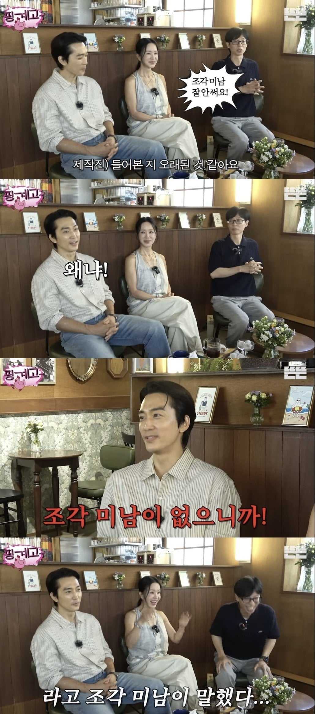

창령사 오백나한상 미남
확실히...
요샌 꽃미남이 유행이라 T자 미남이 별루 없엉
T존 미남들 요즘 보기힘든듯
두부 에겐상 키다리들이 많은듯
미남을 오체분시하면 조각미남.
깔.깔.
낄.낄.
미국남자를 토막내도 조각미남
지금으로 보자면 정혁이 가장 근접하지않나
거상켜
ㄹㅇ
거 상 쳐 키 라 고
형 조각미남인거 알겠으니까 그런 댓글 쓰지 말고 거상이나 켜
거 상 혁
조각미남 마지막쯤이 고수정도인가??
진짜 조각난 내 얼굴 보여줘?
조각미남이 아니라 그냥 조각 남 ㅋㅋ
그건 조각이 아니라 박살...
이라고 말할뻔했네요
산산조각
박살남
박살미... (친) 남
그건 훼손얼굴
매시드
조각이남

딴것두...♡
조각미남 마지막이 딱 고수인거 같음
고비드
이준혁
이준혁 서강준이면 계보 잇기에 충분하다 봄.
이찬혁
송승헌은 그 얼굴 가지고 찍는 작품들이 죄 그모양이누ㅠ
미남은 미국남자 아니야?
미나미
이 영상도 좀 된거야..
각지고 눈썹찐한 미남들이 좀 안보이긴 해
에이전트 H 정도
조각미남은 선 굵고 움푹 들어가고 움푹 나온 그런 입체적인 얼굴상인데 요즘은 둥글둥글 에겐상이 인기라 조각한 것 같다는 표현은 잘 안 나오는듯